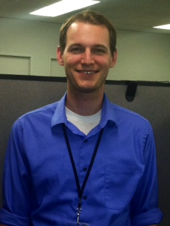

My Life In One Page
Pre-Mission
I was blessed to have been born into a loving family. When I was born we lived in the state of California in the United States of America. When I was
two-years old we moved to Arizona where I grew up. When I turned twelve-years old we moved to South Carolina. This move prepared me for the next stage of
my life--my mission.
Mission
I was blessed to serve a mission in the Durban South Africa Mission which encompassed the KwaZulu Natal province and the Swaziland Kingdom. My mission
was a wonderful experience which changed my life for the best by helping me become more Chirst-like. I would not be the person I am today without my mission.
Post-Mission
After my mission, I met my beautiful wife at a Young Single Adult Conference. Soon after that we got married at the Columbia South Carolina Temple. Two
beautiful girls and six-years of marriage later brings us to-date. Though there have been challenges and trials, I have many blessings which I am
grateful for!